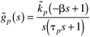
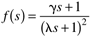
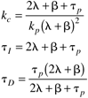

| [ Team LiB ] |
|
M9 Feedback Controller DesignInstructors and students are asked to choose from a variety of controller design options. The following are suggestions: IMC-based PID, Ziegler-Nichols (and Tyreus-Luyben), and frequency response. For the selected controller design technique, perform simulations for the following:
In each case discuss the effect of controller tuning. In addition to the response of stream drum level (process output), include plots of the manipulated input (valve position). You may wish to revise the SIMULINK diagram shown in Appendix M9.1, for your simulations. IMC-Based PIDUse the IMC-based PID procedure to find that the resulting feedback controller: assuming all-pass and allowing the IMC controller to be semiproper. The resulting feedback controller will be lead-lag [neglect the valve dynamics in controller design but include it in the simulation, that is, use Equation (M9.1) for controller design].
You found that the feedback-only controller had offset when a load disturbance occurred. This is because the controller does not have integral action. An IMC-based PID controller with integral action can be designed for the integrating process with inverse response  by using the following IMC filter, and by not forming an all-pass factorization  and by letting g = 2l + b to obtain integral action. The resulting ideal PID controller parameters are:  Ziegler-Nichols (or Tyreus-Luyben)Using the Ziegler-Nichols continuous-oscillation procedure, find the critical gain and ultimate period. Based on the critical gain and ultimate period, choose either the Ziegler-Nichols or Tyreus-Luyben values for PI and PID controllers.
Frequency ResponseDesign a PI controller with a gain margin of 2 and a phase margin of at least 60°.
|
| [ Team LiB ] |
|